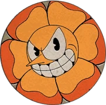
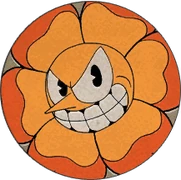
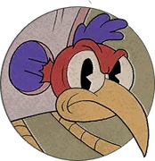
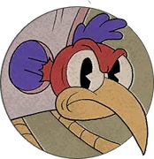
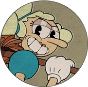
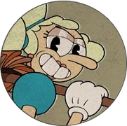
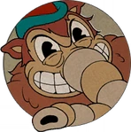

Cuphead é um jogo indie sobre derrotar chefes e se desafiar com diferentes combinações de itens e dificuldades
Este jogo tem um total de 19 chefes


 



 



 



além disso, Cuphead ainda tem uma expansão, a D.L.C., e ela tem mais 7 chefes e uma missão extra
